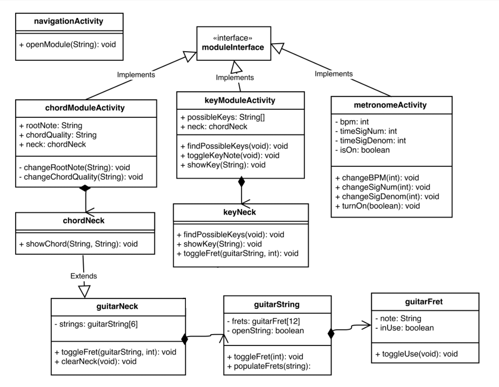

Guitarist Companion
The Guitarist Companion app provides 3 invaluable tools for new guitar players.
Chord Charts
The chord charts section of the app allows you to view finger positionings for over a hundred chords. Simply select a root note (A, B, C#, etc.) with the first spinner and a quality (major, minor, diminished, etc.) with the second spinner. The chord chart will update in real time.

Key Finder
The key finder section is used when you know several notes that belong in a song and what to know what key it is in. Intermediate and advanced guitarists can do this in their head, but it can be an overwhelming task for newer players. Unlike the chord section, you can view the neck up to the 12th fret by dragging the neck in the desired direction. Tap on the notes that you know belong in the song, and the list of possible keys will update in real time. There are buttons to view full keys, as well as a button to clear the neck.
Metronome
The metronome is a useful tool for all musicians, and is used to make sure you are playing in time. Adjusting the BPM will change how frequently the ticks occur. Adjusting the time signature will change how many regular ticks occur between every 'start of measure' tick.
Class Diagram
In the original diagram, keyNeck extended guitarNeck, but during implementation it became clear that this wouldn't work. For the chord section of the app, notes needed to be grouped together based on which string they belonged to, whereas for the the key section they had to be grouped together based on which note they represented. Since all instances of the same note act identically in the key finder section, it was much easier to simply define an array of CheckBoxes for each note within the activity itself.
Design Patterns
I implemented the singleton pattern in order to make sure there is only ever a single instance of the chordNeck class.
Points of Interest
Selector for custom checkbox style
Tick method using modulus operator to account for time signature